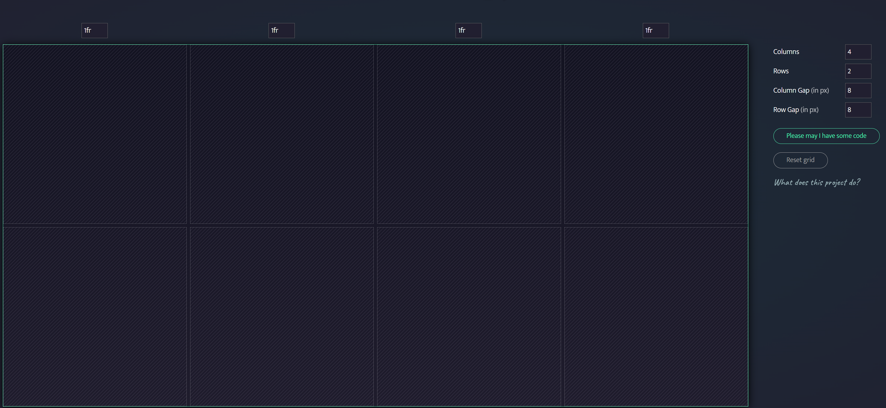

1. Einleitung
In diesem Artikel werden die grundlegenden Konzepte von Cascading-Style-Sheets (CSS) behandelt und ihre Bedeutung in der modernen Webentwicklung erläutert.
In diesem Artikel werden die grundlegenden Konzepte von Cascading-Style-Sheets (CSS) behandelt und ihre Bedeutung in der modernen Webentwicklung erläutert.
Selektoren sind ein wesentlicher Bestandteil von CSS und dienen dazu, HTML-Elemente auf der Webseite auszuwählen, auf die die CSS-Regeln angewendet werden sollen.
Eigenschaften definieren das visuelle Aussehen der ausgewählten Elemente. Jede Eigenschaft hat einen Namen und einen Wert.
Die Werte sind die Einstellungen, die Sie für eine bestimmte Eigenschaft festlegen.
1-Interne Einbindung (Inline CSS): erfolgt innerhalb des HTML-Dokuments
2-Externe Einbindung: man erstellt eine CSS Datei und verknüpft sie mit dem HTML-Dokument
<link rel="stylesheet" type="text/css" href="CSS-Basic-Article.css">3-Inline-Styles: Inline-Styles werden direkt in einem HTML-Element mit dem style Attribut definiert
<h1> style="font-size: 70px; text-decoration: underline;">Inline CSS <h1>Element selektor
- Beispiel: 'p' wählt alle <p> Elemente auf der Seite aus
Klassen-Selektor
- Beispiel: .author wählt alle Elemente mit der Klasse "author" aus
ID-Selektor
- Beispiel: '#header' wählt das Element mit der ID "header" aus
Nachfahren selektor
- Beispiel: ul li wählt alle <li> Elemente aus, die sich in einem <ul> Element befinden
Kind-Selektor
- Beispiel: ul > li wählt alle <li> Elemente aus, die direkte Kinder eines <ul> Elements sind
Pseudo-Klassen
- Beispiel: a: hover wählt alle <a> Elemente aus, wenn sie mit der Maus überfahren
Pseudo-Elemente
- Beispiel: p::first-letter wählt den ersten Buchstaben in einem <p> Element aus
Attribut-Selektor
Beispiel: input[type="text"] wählt alle <input> Element mit dem Attribut type="text" aus
Universalselektor
- Beispiel: * wählt alle Elemente aus
- Text-Stile:
color: Legt die Textfarbe fest. Beispiel: color: #333;.
font-family: Definiert die Schriftart. Beispiel: font-family: Arial, sans-serif;
font-size: Setzt die Schriftgröße. Beispiel: font-size: 16px;.
font-weight: Steuert die Schriftgewichtung, z. B. bold für Fettschrift.
- Hintergrundgestaltung:
background-color: Bestimmt die Hintergrundfarbe. Beispiel: background-color: #f0f0f0;.
background-repeat: Definiert, wie das Hintergrundbild wiederholt wird, z. B. no-repeat.
background-size: Steuert die Größe des Hintergrundbildes, z. B. cover oder contain.
- Abstände:
margin: setzt den äußeren Abstand eines Elements. Beispiel: margin: 10px;.
padding: Legt den inneren Abstand eines Elements fest. Beispiel: padding: 20px;.
border: Definiert die Eigenschaften des Elementrahmens. Beispiel: border: 1px solid #ccc;
- Positionierung und Layout:
position: Steuert die Positionierung eines Elements, z. B. relative oder absolute.
display: Legt das Anzeigeverhalten eines Elements fest, z. B. block, inline, flex.
float: Erlaubt das Schweben eines Elements links oder rechts im Layout.
- Textausrichtung und -formatierung:
text-align: Bestimmt die horizontale Ausrichtung von Text, z. B. center oder right.
line-height: Setzt die Zeilenhöhe (Zeilenabstand) fest. Beispiel: line-height: 1.5;.
text-transform: Ändert den Text in Großbuchstaben, Kleinbuchstaben oder Kapitälchen.
- Schriftart und Textdekoration:
font-style: Steuert die Schriftart, z. B. italic für Kursivschrift.
text-decoration: Ermöglicht die Hinzufügung von Unterstreichungen, durch streichungen usw.
- Box-Modell:
width und height: Definieren die Breite und Höhe eines Elements.
margin, padding, und border: bestimmen das Box-Modell eines Elements.
- Farbe- und Oazitätseigenschaften:
opacity: Legt die Transparenz eines Elements fest. Beispiel: opacity: 0.7;.
background-opacity: Definiert die Transparenz des Hintergrunds. Beispiel:
background-color: rgba(255, 0, 0, 0.5);.- Listen-Styles:
list-style-type: Bestimmt den Stil der Listenmarker (Punkte, Zahlen, usw.). Beispiel:
list-style-type: disc;- Textschatten und Boxschatten:
text-shadow: Fügt Textschatten hinzu, um Text hervorzuheben.
box-shadow: Erzeugt Schatten um ein Element, um Tiefe zu erzeugen.
Textformatierung und die Anpassung von Schriftarten sind Schlüsselaspekte in der CSS-Gestaltung von Webseiten, die hier ausführlich behandelt werden.
1- font-family:
#test1 {font-family: serif;}#test2 {font-family: sans-serif;}#test3 {font-family: cursive;}2- font-size:
font-size: 16px;3- font-weight:
font-weight: bold;font-weight: italic;1- color:
color: #333;2- text-align::
text-align: center;3- line-height:
line-height: 1.5;4- text-decoration::
text-decoration: underline;5- text-transform:
text-transform: uppercase;Das Box-Modell ist ein zentrales Konzept in CSS. Es beschreibt, wie jedes HTML-Element als Rechteck oder "Box" betrachtet wird, und wie der Inhalt, die Innenabstände (Padding), der Rahmen (Border) und die Außenabstände (Margin) dieser Box gestaltet werden.
div {
background-color: grey;
width: 300px;
height: 300px;
padding: 50px;
margin: 100px;
border: 20px solid black;
}
Hintergrund kann man mit zwei grundlegenden Arten definieren .1 background-colour .2 background-image(url)
man kann Hintergrund noch stylen und positionieren mithilfe von CSS eigenschaften.background-position.background-repeat.background-attachment
body {
background-color: #add8e6;
}
background-image: url('header-background.jpg'); /* URL zum Hintergrundbild */
background-size: cover; /* Passen Sie das Bild an die Box an */
background-repeat: no-repeat; /* Keine Wiederholung des Bildes */
background-position: center; /* Zentrieren des Bildes */
Die Verwendung von CSS-Transitions und Animationen ist eine großartige Möglichkeit, um Interaktivität und visuelle Anziehungskraft in Webseiten zu integrieren.
1- Ausgangszustand:
Zuerst sollten Sie den normalen Zustand Ihrer Elemente definieren. Dies könnte beispielsweise der Standard-Stil eines Buttons sein.
2- Änderungszustand:
Wenn der Benutzer interagiert (z. B. Mauszeiger über den Button), ändern Sie die CSS-Eigenschaften des Elements, die Sie animieren möchten.
3- Fügen Sie die Transition hinzu:
Verwenden Sie die transition-Eigenschaft, um zu definieren, welche Eigenschaften übertragen werden sollen und wie lange die Animation dauern soll.
Beispiel:
.button {
background-color: #3498db; /* Ausgangszustand */
color: #fff; /* Ausgangszustand */
transition: background-color 0.3s, color 0.3s; /* Transition für Hintergrundfarbe und Textfarbe */
}
.button:hover {
background-color: #2980b9; /* Änderungszustand */
color: #eee; /* Änderungszustand */
}1- Animation Planen:
Überlegen Sie sich, was genau animiert werden soll und welche Schritte die Animation haben soll. Dies kann Bewegungen, Farbänderungen oder Transformationen umfassen.
2- Keyframes Definieren:
Verwenden Sie @keyframes, um die verschiedenen Zustände oder Schritte der Animation zu definieren. Sie können den Anfangs- und endzustand sowie Zwischenzustände festlegen.
Beispiel:
@keyframes slide-in {
0% { transform: translateX(-100%); }
100% { transform: translateX(0); }
}
3- Animation Anwenden
Beispiel:
.element {
animation: slide-in 1s ease-out 0.5s both;
/* Animation "slide-in" mit 1 Sekunde Dauer, 0.5 Sekunden Verzögerung und Ease-Out-Beschleunigungsfunktion */}
1- Static Position (Statische Position):
.element {
position: static;
}
2- Relative Position (Relative Position):
.element {
position: relative;
top: 10px;
left: 20px;
}
3- Absolute Position (Absolute Position):
.element {
position: absolute;
top: 50px;
left: 100px;
}
4- Fixed Position (Feste Position):
.element {
position: fixed;
top: 10px;
right: 10px;
}
5- Sticky Position (Haftende Position):
.element {
position: sticky;
top: 20px;
}
Die Verwendung des CSS Grid-Layouts zur Erstellung komplexer, gleichmäßig aufgeteilter Webseitenlayouts.
Website responsive gestalten mit Grid
man eignet sich auf ein bestimmtes Gestaltungsraster mit einer bestimmten Anzahl von Spalten und columns

.grid {
display: grid;
grid-template-columns: repeat(4, 1fr);
grid-template-rows: repeat(2, 1fr);
grid-column-gap: 8px;
grid-row-gap: 8px;
}
- Die Bedeutung des responsiven Webdesigns und wie CSS verwendet wird, um Webseiten für verschiedene Bildschirmgrößen anzupassen.
- Graceful Degradation(für moderne Geräte) vs progressive Enhancement (für schwache Geräte)
- Arten von Webdesign: 1. Mobile-First Webdesign 2. Responsive Webdesign (flexible passt für alle) 3. Adaptives Webdesign (nicht flexible nur für beistimmte bildschirmgröße)
CSS (Cascading Style Sheets):
CSS ist eine Gestaltungssprache, die zur Steuerung des visuellen Erscheinungsbilds von Webseiten verwendet wird. Es ermöglicht die Trennung von Inhalt und Präsentation.
Notwendigkeit von CSS-Kenntnissen:
CSS-Kenntnisse sind entscheidend, um erfolgreiche Webseiten zu gestalten. Sie ermöglichen es, ansprechende Designs zu erstellen, die benutzerfreundlich und funktional sind. Diese Grundlagen bilden das Fundament für die Arbeit in der Webentwicklung und Webgestaltung. Mit CSS kann man die visuelle Darstellung seine Webprojekte maßgeblich beeinflussen und die Benutzererfahrung optimieren.
Gestaltung und Präsentation:
CSS ermöglicht die Trennung von Inhalt und Präsentation. Mit CSS können Webdesigner das visuelle Erscheinungsbild einer Website steuern, einschließlich Layout, Farben, Schriftarten und Abstände. Dies führt zu ansprechenden und ästhetischen Webseiten.
Responsive Webdesign:
Mit CSS können Sie responsive Webseiten erstellen, die sich automatisch an verschiedene Bildschirmgrößen und Geräte anpassen. Dies ist heute unerlässlich, da immer mehr Menschen von Mobilgeräten aus auf das Internet zugreifen.
Konsistenz und Wartbarkeit:
CSS ermöglicht die Erstellung von konsistenten Stilen und Layouts auf einer Website. Änderungen in der Gestaltung können schnell und einfach in einem zentralen Stylesheet vorgenommen werden, wodurch die Wartung erleichtert wird.
Barrierefreiheit:
Durch die Verwendung von CSS können Sie barrierefreie Webseiten erstellen, die für Menschen mit unterschiedlichen Fähigkeiten und Bedürfnissen zugänglich sind. Sie können beispielsweise die Schriftgröße anpassen oder Kontraste erhöhen, um die Lesbarkeit zu verbessern.
SEO (Suchmaschinenoptimierung):
CSS spielt eine Rolle bei der SEO. Suchmaschinen bevorzugen gut strukturierte, semantische HTML und sauberen Code. Durch die Verwendung von CSS können Sie Ihre Website suchmaschinenfreundlicher gestalten.
Interaktivität:
CSS kann zusammen mit JavaScript für Interaktivität und Animationen verwendet werden. Dies bietet den Benutzern eine ansprechende und reaktionsschnelle Erfahrung auf der Website.
Browserkompatibilität:
CSS hilft dabei, sicherzustellen, dass Ihre Website in verschiedenen Webbrowsern konsistent und korrekt gerendert wird. Es bietet Mechanismen zur Behandlung von Browser unterschieden und zur Umgehung von Inkompatibilitäten.
Designanpassungen:
Mit CSS können Benutzer eigene Designanpassungen vornehmen, beispielsweise die Wahl des Farbschemas oder die Anpassung der Schriftgröße. Dies trägt zur Benutzerzufriedenheit bei.